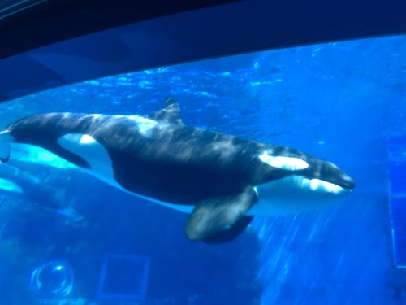

プリウス50系前期の車いじり、ジム通い。
みんから、キータにいろいろ投稿しています。
| OS | Windows, Lubuntu,RaspberryPi |
|---|---|
| Engine, Frameworks | Node.js, python,Scratch |
| Tool, MiddleWare | Git,MariaDB,Oracle |
| 資格・免許 | 基本情報技術者、AWS CP,SAA,自動車２種,自動二輪（中型） |
車いじり、新しいもの好き。定年後にZEN大学で学んでいます。
連絡先（メールアドレス）
ZEN大学学生、一部上場企業でSier,PMで現在は退職して個人事業主（収入無）
| 2026 年 | ZEN大学 入学 |
|---|---|
| 2022 年 | 基本情報技術者認定、AWS CP,SAA |